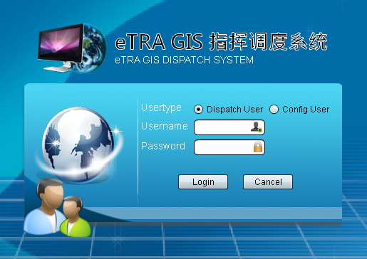

The system divides the dispatchers into configuration users and dispatch users. Configuration users can perform the basis information maintenance, marshaling information maintenance, log configuration and map operation. Dispatch users can perform all the scheduling functions.
The steps of logging into the system are as follows:
1) Enter the URL of the dispatch console in IE browser and press Enter. The login interface pops up, shown in Figure 1.

Figure 1. Login interface
2) Select the user type, and enter the username and password. Click <Login>.
3) The system will display the operation interface, shown in Figure 2 and Figure 3.

Figure 2. Configuration user operation interface

Figure 3. Dispatch user operation interface
 Note:
Note:
The username and password are not more than a string of 20 ASCII characters.
Different username has different operation permissions.
Network failure or incorrect username/password may result in login failure.
Click in the menu bar to exit the system.
Note:
If not all the resources are released during logout, the exit will fail.
After the installation is complete, we need to set the login site of the GIS system as a trusted site. Otherwise, it may be intercepted.
The steps are as follows:
1) Enter the IP address in the IE address bar in the format of http://GIS IP address:port/login.aspx, such as http://10.8.52.241:8080/login.aspx. It will jump to the login interface of the GIS system.
Note:
The port is variable according to the practical applications.
2) Click [Tools/Internet Options] to open the Options dialog box.
3) Click the “Security” tab, and a dialog box pops up.
4) Click “Trusted Sites”, and then click “Default Level". Set the security level to "Low”.
5) Click "Sites…", and a dialog box pops up.
6) Cancel the selection of "Require server verification (https:) for all sites in this zone", and click <Add>.
7) After adding the website, click <OK>, then click <Apply> <OK> in the Internet Options dialog box.
8) Restart the IE browser to take the configuration into effect.
The Compatibility View may lead to some script errors and features are not available. Therefore, we need to close the Compatibility View.
The steps are as follows:
1) Click [Tools/Compatibility View Settings]. The “Compatibility View Settings” dialog box pops up.
2) Cancel the selection of “Display Intranet sites in Compatibility View”.
3) Click <Close>.
Copyright © 2012 Eastcom, Inc. All rights reserved. |
||